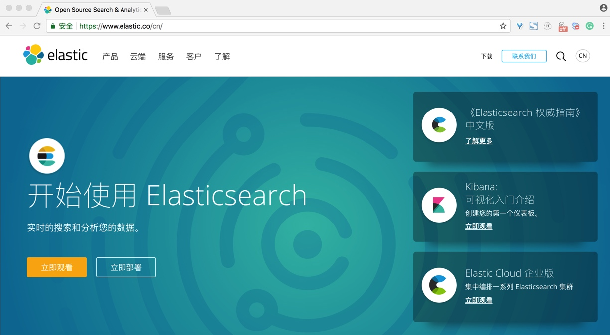
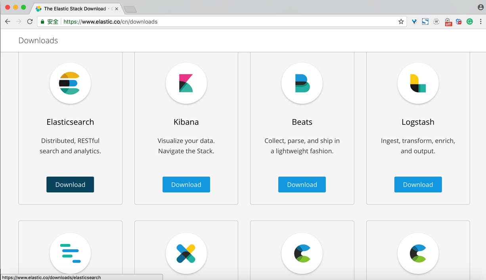
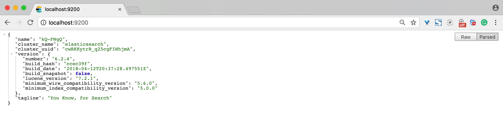
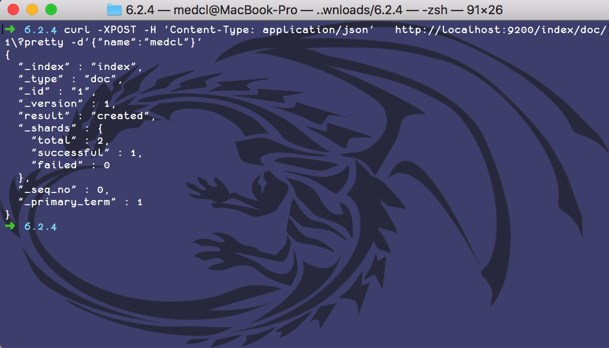

安装使用 Elasticsearch
首先给大家介绍一下如何安装和使用 Elasticsearch。
首先，当然是 Elasticsearch 的下载，我们打开 Elastic 的官方网站：https://www.elastic.co/，如下图：

点击右侧下载按钮，即可前往下载页面，选择 Elasticsearch 产品，如下图：

我们可以看到 Elasticsearch 详细下载页面，当前显示最新的版本是 6.2.4，发布时间是 2018 年 4 月 17，有多个安装包类型可以选择，我们点击选择 ZIP 包的下载链接，浏览器即自动开始下载，如下图：

因为 Elasticsearch 是基于 Java 运行时平台，所以还需要安装 JDK 8 以上版本环境，我们可以安装最新的版本，如：JDK10。关于 Java 环境的安装，这里就不做详细说明，大家可以自行前往下载安装。
下载得到的是一个只有 29.1MB 大小的压缩包，压缩包内结构，如下图：

我们来依次看一下他们都分别代表什么意思：
bin 目录下面存放是一系列可执行程序，同名 .bat 后缀是用于 Windows 平台的可执行脚本：
elasticsearch，Elasticsearch 的启动进程，Elasticsearch 程序的主入口。elasticsearch-env，用于环境变量的配置，可以在这里修改相关的环境配置，大部分情况不建议直接修改此配置文件，可以通过在外部通过变量名来进行设置。elasticsearch-translog，主要用于对 Translog 进行清理操作。elasticsearch-keystore，主要用于管理 Elasticsearch 的密钥。elasticsearch-plugin，插件安装工具。elasticsearch-service*开头的几个程序是为 Windows 平台提供的服务管理工具。
config 目录，主要是存放一下配置文件信息：
elasticsearch.yml，Elasticsearch 的配置文件，使用 Yaml 文件格式作为标准。jvm.options，Java 虚拟机运行环境的相关参数配置。log4j2.properties，日志文件相关的配置。
lib 目录是 Elasticsearch 依赖的 Jar 包和自己的 Java 本身程序所在的地方。
data 目录，数据默认存放的位置。
logs 目录，日志默认存放的位置。
modules 目录，存放 Elasticsearch 的内部功能模块。
plugins 目录，存放 Elasticsearch 的外部扩展插件。
然后，我们开始运行 Elasticsearch 程序。进入终端控制台，CD 切换到解压文件所在目录，注意目录名不要包含中文和空格。运行 Elasticsearch 主程序，如下图所示：（注：这里演示环境为 MacOS，后续如不加特别说明都以此作为演示环境）

看到控制台输出了若干启动信息，可以看到有启动程序的环境变量，加载的模块和插件名称清单，当前监听了 9200 和 9300 端口，并且不再有新的日志输出，这个时候说明 Elasticsearch 已经启动完毕了，我们可以进一步验证 Elasticsearch 服务器是否正常。
9200 端口是 Elasticsearch 默认监听的 RESTful 端口，属于 Http 协议，我们可以直接用浏览器访问：http://localhost:9200/ 来验证一下，如下图所示：

可以看到，接口返回了一个 JSON 格式的消息，里面显示的是这个 Elasticsearch 集群（单个节点的集群）的基本信息，集群名称为 elasticsearch，Elasticsearch 的版本为 6.2.4 和底层 Lucene 的版本为 7.2.1。
到这里，我们一个最简单的 Elasticsearch 节点或者叫单实例集群就已经成功安装成功并启动了，下一步就是具体进行数据的操作了。
我们先构建一个索引请求，使用 curl 来执行一个 Http Post 请求:
curl -XPOST -H 'Content-Type: application/json' http://localhost:9200/index/doc/1?pretty -d'{"name":"medcl"}'
我们来分析一下这个 URL 请求：http://localhost:9200/index/doc/1 ，http://localhost:9200/ 是 Elasticsearch 的访问地址，Http 协议，本机地址，端口是 9200，这个很好理解。
/index/doc/1 可以理解为这个文档的路径，相当于是这个索引文档的唯一标识，由以下几部分组成：
index，索引名称，是这个文档存放的索引数据库名称。doc，类型名称，是一个固定的类型，7.0 版本后会移除，暂时不用管它是干嘛的，我们可以忽略它的存在。1，文档 ID，是这个文档的在这个 Elasticsearch 数据库里面的唯一标识，可以对应理解为数据库里面的主键。
在同一个index里面，为了保持唯一性，只能存在一个 ID 为 1 的 doc，相同路径的新进来的数据会覆盖之前添加的数据。
{"name":"medcl"} 是Http 请求的 Body 参数，是一个标准的 JSON 文档，里面有一个字段名为 name，这个字段的值为 medcl。
?pretty 参数表示对请求的返回结果进行输出格式化，主要是为了让请求返回的 JSON 数据看起来更加清晰直观。
在终端下执行命令，如下图：

上面的信息说明 Elasticsearch 的 API 能够正常访问，并成功创建了一条索引数据。返回结果里面也返回了相应的元数据信息，我们来分别解读一下：
_index，索引名，值为index，和索引操作的 URL 包含的数据一致，注意下划线开头的表示系统的元数据，也就是内置的属性。_type，类型名，我们可以忽略它。_id，唯一标识。_version，是这个文档的版本，每对这个文档修改一次，版本号自增一次。result，表示服务器操作的返回结果，用来表明该操作是是创建还是更新。_seq_no等其它属性，我们暂时不用关心。
刚刚我们提交了一个索引数据，我们怎么验证是否真的写成功了呢？我们可以拿回来看一下，也就是取回我们刚刚添加的这个索引文档，我们只需要把刚刚的 HTTP 请求里面的 POST 谓词换成 GET 就可以了。
curl -XGET -H 'Content-Type: application/json' http://localhost:9200/index/doc/1?pretty'

如图所示，该请求执行成功，并返回了一个 JSON 文档，里面包含了以下信息，我们来分别解读一下：
_index、_type、_id和_version同索引创建的返回值说明，不赘述。_found，如果这个文档不存在或者已删除，这个返回的值是false。_source，就是我们写入文档时候的原始数据，此处可以看到和我们之前提交的数据一致。
至此，我们安装并验证了 Elasticsearch 的服务，读者可以自行参照学习，后面将进一步介绍。